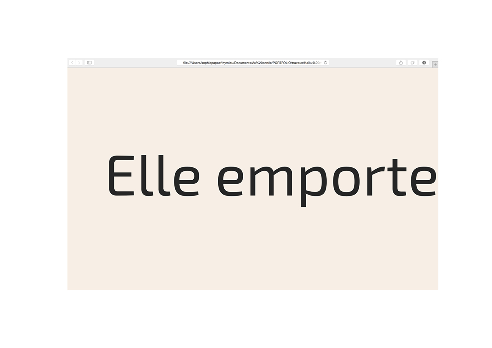
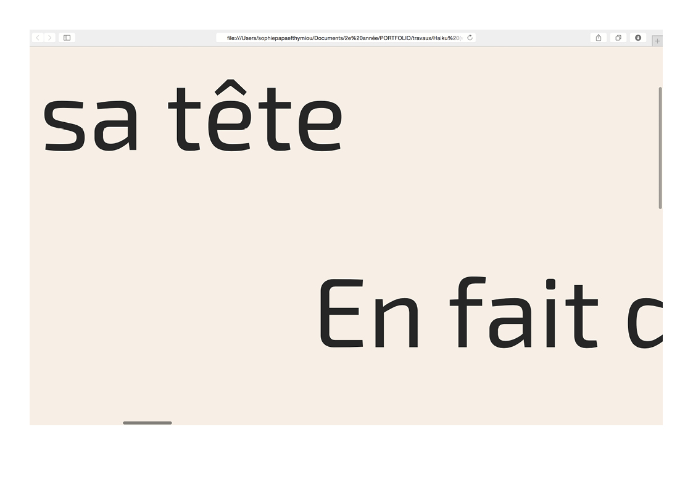

Haiku Le haiku est un texte poétique d’origine japonaise, caractérisé par sa brieveté. J’ai choisi un haiku de Takahashi Mutsuo: Elle emporte de l’eau sur sa tête En fait dégoutter Sur ses épaules et sur ses seins. Avec ces quelques phrases, je crée un projet web développé en langage HTML/CSS. Cette page web doit être réduite à ses éléments les plus simples : un bloc de texte (le haïku) à placer sur un canevas (l’écran). Il s’agit d’explorer les possibilités du CSS pour travailler les styles graphiques (typographie, couleurs) et la mise en page. Pour voir la page web, vous pouvez cliquer ici!


❮
❯